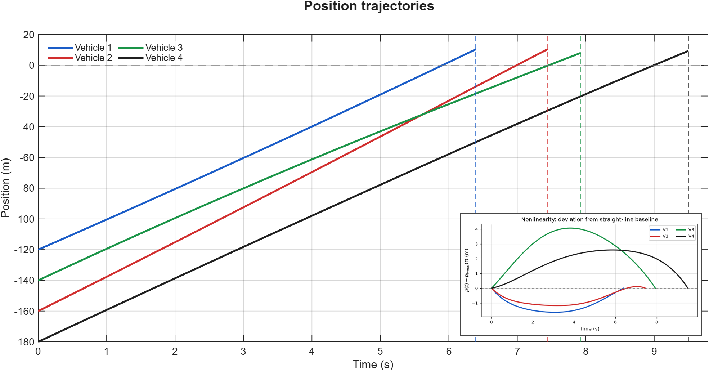
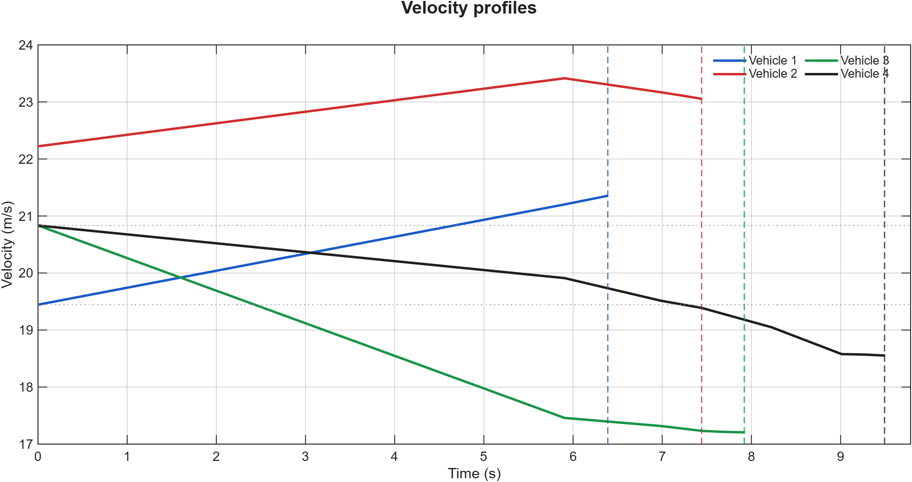
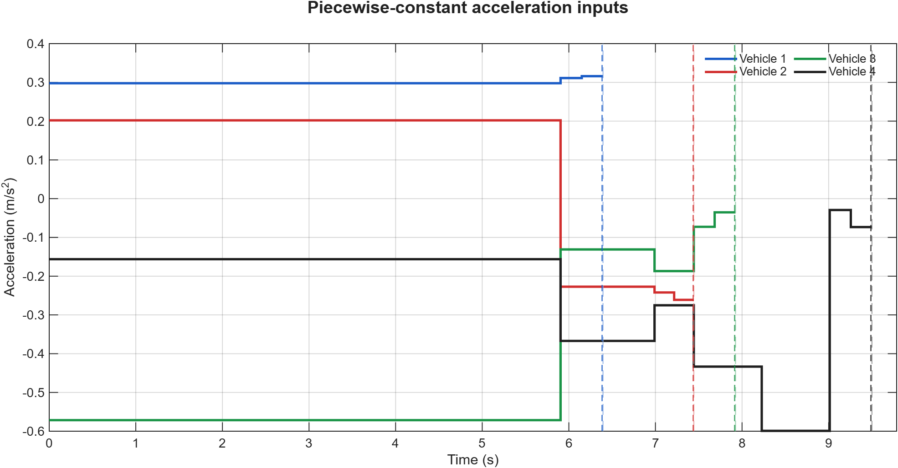
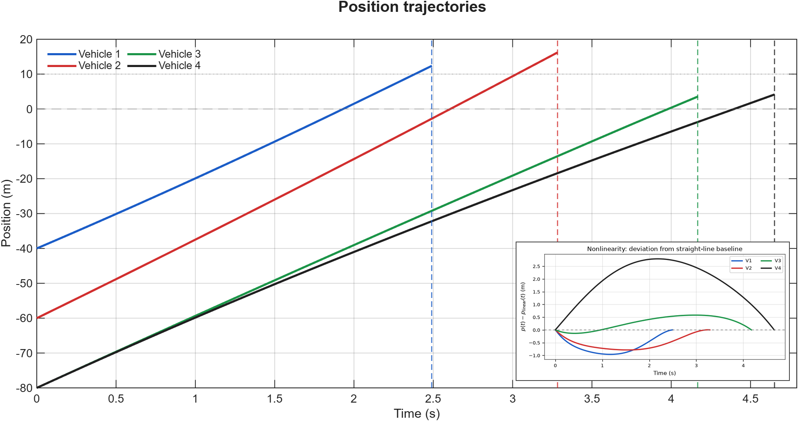
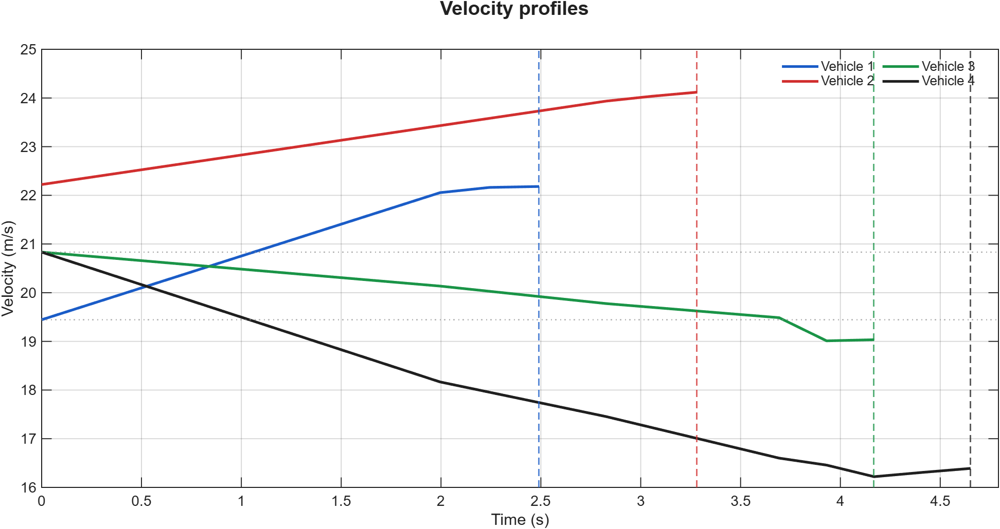
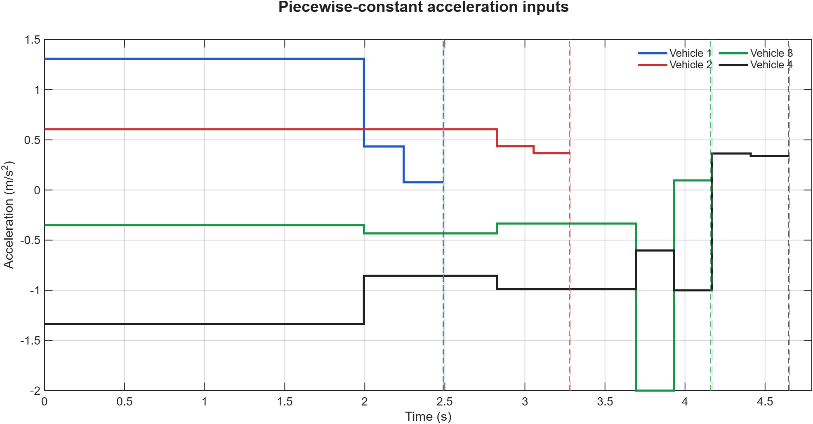

Example 1: Four Vehicles from Two Directions
Four vehicles approach the intersection from two directions under a fixed crossing order.



ECE 623 Course Project · Spring 2024
Fixed-precedence vehicle coordination at traffic intersections, focusing on nonlinear scheduling, safety constraints, and two four-vehicle numerical cases.
Scope note: This course project follows a published formulation; it does not claim a new scheduling method or a full implementation of the paper's distributed ALADIN architecture.
Problem Formulation
The crossing order is given. The optimization schedules when each vehicle enters and exits the shared intersection region. Piecewise- constant acceleration variables are included to keep the timing schedule physically feasible.
Entry and exit times, \(t_i^{\mathrm{in}}\) and \(t_i^{\mathrm{out}}\), for each vehicle.
Piecewise-constant accelerations \(a_{i,k}\) and auxiliary variables for rear-end separation.
Objective
Keeps each vehicle close to its desired traveling speed.
Discourages unnecessarily aggressive acceleration and braking.
Penalizes abrupt changes between consecutive time segments.
Constraints
Simulation Examples
Each example pairs the vehicle animation with the corresponding position, velocity, and piecewise-constant acceleration profiles.
Each colored curve ends at that vehicle's scheduled intersection-exit time, marked by the matching vertical dashed line. The position inset plots deviation from a straight-line baseline to make trajectory curvature visible at this scale.
Four vehicles approach the intersection from two directions under a fixed crossing order.



Four vehicles approach from four directions, producing a distinct sequence of conflict-region access.



Result: Both examples illustrate fixed-precedence coordination of conflict-region access together with the associated vehicle trajectories and control inputs.